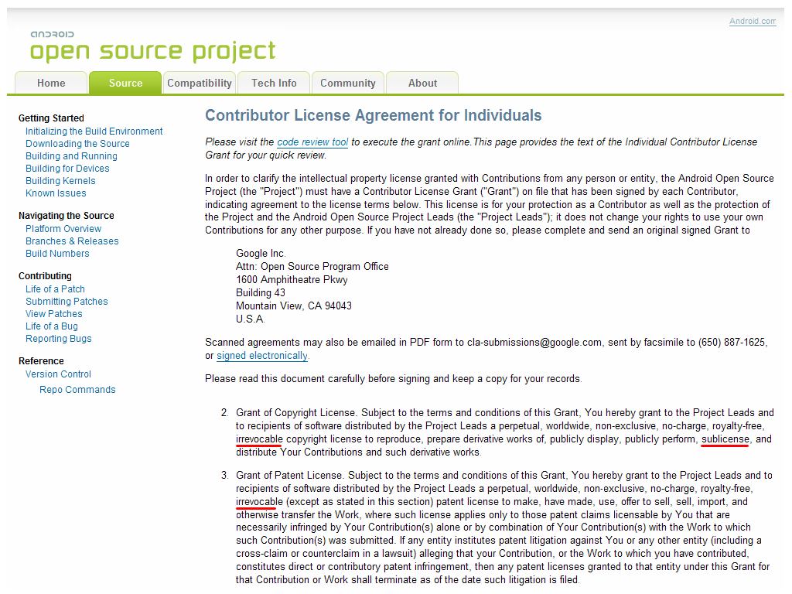

簡論「轉授權／再授權」於公眾授權領域的效力與應用方式


▲ 圖1：Google Android Open Source Project 一般個人版本貢獻協議書
【sublicense 改以轉者名義為之、係屬一種附屬與次級的授權狀態】
sublicense 這個機制在公眾授權的領域發揮了很大的作用，因為它是一個能夠「切割前後段法律授權關係」的機制。一般來說，sublicense 有兩個重點：
1、讓該權利的被授權人，能再次轉以授權人的立場，將本身自他處取得的權利，改以本人的名義轉授權出去；所以這是一種「轉手授權」的關係，也因此，
2、sublicense 的範圍不得超過原被授權人得到的授權範圍，因為 sublicense 相對於原始權利人的地位，是一種「附屬性、次級性」的授權，故轉授權人能夠授與後手的授權範圍，亦不得逾越原始權利人提供給他的範圍。
而其實，sublicense 在各國的智慧財產權體制下，被定義為具「明示」方可「例外」主張的授權機制。例如我國於著作權法第 37 條第 3 項的地方規定：「非專屬授權之被授權人非經著作財產權人同意，不得將其被授與之權利再授權第三人利用。」所以說，如果授權文件裡，並沒有明白引述該授權關係日後是容許「轉授權」或是「再授權」的，則該權利的授權狀態推定是不得容許被改以 sublicense 的方式進行後續運用。然而，在自由開源軟體授權等公眾授權領域裡，因為某些作品在一開始的規劃上，就是希望能夠加入眾人共工的力量來共同撰寫，而該專案的衍生改作關係經過許多人的參與之後，在授權鏈上的關係勢必非常可觀，甚至從原始的權利人算到最後一個使用者，可能要經過上百上千段的授權傳承關係，故為數不少的自由開源軟體授權條款，便透過授權條款的預先規劃，明定程式的修改者或散布者，必要時得以引據 sublicense 的機制，將其經手過的程式碼改以自己的名義進行釋出，如此一來，如果程式的改作結果不盡良好，則此一改作狀態在名譽與授權關係上，便不需要前手的原始創作人與其他改作人來負責；二來是透過 sublicense 機制，來切割作品前後段的授權關係，以有效的降低授權鏈上的當事人數量，因為依多數見解，自由開源軟體專案在多人參與之後，會被視為著作權法上的共同著作或是結合著作（註一），而若形成這樣的著作，雖然在權利上的訴求或回復，可以由個別的貢獻者單獨為之，但若是要就作品進行整體處份行為，如變更後續的授權與散布方式（註二），那就仍然必須回歸到法律基本面，經由共同著作或組合著作全數或絕對多數權利人同意後方可為之。所以某些自由開源軟體專案在建置之初，預想到這樣的問題，便預先選定了讓後手使用者得以自行啟動 sublicense 機制的條款，以在日後得以直接依條款規劃的機制處理上述問題。
【sublicense 於自由開源軟體領域的應用方式與差異】
右列幾款常見的自由開源授權條款，如：Apache-2.0、MIT、CPL-1.0、EPL-1.0、CDDL-1.0，以及 MPL-2.0（散布可執行檔格式時，註三），均有著明確容許 sublicense 的文字。所以如果使用者參與開發的是以這些授權方式進行共工的專案，授權規劃上，便可以在改作或是再行散布時，適當標註前專案與後專案之間的歷史關係，以及原創作人與創作團隊的顯名聲明之後，將後續專案轉以自己的名義向外授權。舉例來說，如果原來的自由開源軟體「AAA PROJECT」，是由「MR. A」所開發，並以前述所說的 Apache-2.0、MIT、CPL-1.0、EPL-1.0、CDDL-1.0，以及 MPL-2.0 來向外授權的話，那麼該專案經「MR. B」改寫或是與其他元件結合運用後，便有機會被以 sublicense 的方式來標示與應用，例如在改作為「BBB PROJECT」之後，在授權聲明權利標示的部份，可以用下列的方式來呈現：
2013 (c) BBB PROJECT, redistributed by MR. B under EPL-1.0, Some files of BBB PROJECT are derived from AAA PROJECT developed by MR. A on SourceForge under EPL-1.0 (https://sourceforge.net/AAA/).
上述的權利標示表示：BBB PROJECT 是由 MR. B 所改作與開發，其專案衍生自於 SourceForge 上由 MR. A 以 EPL-1.0 方式釋出的 AAA PROJECT，現單獨以 MR. B 的名義向外釋出，由於 EPL-1.0 就專案本身的程式碼設有 COPYLEFT 向後拘束的機制，故此時作品經改作或再散布之後，雖然得以 Mr. B 本身的姓名向後授權，但仍然必須承繼 EPL-1.0 的授權方式。
而以下的例示：
2013 (c) BBB PROJECT, redistributed by MR. B under {TTT PROPRIETARY LICENSE}, Some files of BBB PROJECT are derived from AAA PROJECT developed by MR. A on SourceForge under Apache-2.0 (https://sourceforge.net/AAA/).
上述的權利標示表示：BBB PROJECT 是由 MR. B 所改作與開發，其專案衍生自於 SourceForge 上由 MR. A 以 Apache-2.0 方式釋出的 AAA PROJECT，現單獨以 MR. B 的姓名，將 BBB PROJECT 整體改以 TTT PROPRIETARY LICENSE 的方式進行運用，由於 Apache-2.0 就專案的程式碼並未設有 COPYLEFT 向後拘束的機制，其允許作品經改作或散布之後，能以包含 Apache-2.0 各項義務性條款的個別授權方式來向後授權，故此時 MR. B 得以本身的姓名，將 BBB PROJECT 改以融合 Apache-2.0 授權規範的 TTT PROPRIETARY LICENSE 進行運用。
行文至此，也許很多讀者已經發現，一般被認為授權義務性要求最低，與 MIT License 幾近等價的 BSD-3-Clause，並不在上述明示允許 sublicense 的條款之列；而使用率與知名度皆非常高，被 Linux Kernel 採納為其授權條款的 GPL-2.0，也不在這份清單裡面，所以這兩個狀況，都必須被進一步解釋與披露，才能讓讀者對於自由開源軟體領域裡 sublicense 機制的應用，有一個基礎但全面的認識。首先說明 BSD-3-Clause 的狀況，多數的論者認為解釋上從條款目的性的觀點來看，BSD-3-Clause 應該是能容許 sublicense 機制的，然而文義上，BSD-3-Clause 的條款內容就是沒有明示將 sublicense 這個關鍵字詞點出來，故實務上適用 BSD-3-Clause 而補充說明容許 sublicense 的專案，與適用 BSD-3-Clause 但自我表明不可被 sublicense 的專案皆有之，故從嚴縝的立場來看，若是對於特定 BSD-3-Clause 授權專案有 sublicense 應用的需求時，最保險與尊重權利人的方式，還是應該先行洽詢其原始權利人，探詢權利人的解讀態度之後，再行進行 sublicense 機制的應用。
【GNU 系列條款改採其他方式來處理授權鏈日益龐大的可能性】
GNU 系列授權條款如 GPL-2.0、GPL-3.0、LGPL-2.1、LGPL-3.0、AGPL-3.0，在程式著作權方面，多數的看法是不允許 sublicense 機制的運作的，這是因為 GNU 系列條款在設計上，本就帶有較強「軟體自由 (Software Freedom)」理念於其中，故從授權拘束的立場上來看，其設計機制會讓專案的原始權利人與開發者，在必要時仍然能以身為權利人的身份，來介入並導正後續程式碼經改作與散布後，可能衍生的各種不正當利用行為，所以 GNU 系列的條款，並不允許程式經改作或是再散布之後，可以採用 sublicense 機制來切割前後段的授權關係。而相應於此，這類條款也發展出其他非 sublicense 的配套機制，來處理專案經眾人參與之後授權鏈規模日益龐大的狀況。以 GPL-3.0 為例，主要有下列二項的配套機制：
1、設置「授權循環機制 (license relay mechanism)」，所謂授權循環機制，指的是當該 GPL-3.0 授權程式的前手散布者，因為違約侵權使用程式而罹於失權之時，此一前手的失權狀態將不會影響到善意從其手上得到 GPL-3.0 程式碼的後手使用者 (Termination of your rights under this section does not terminate the licenses of parties who have received copies or rights from you under this License.)，此一機制預先被寫在 GPL-3.0 的條款內容裡，以確保不會因為個別使用者的違約與侵權，就造成 GPL-3.0 授權鏈結關係的瓦解，也就是說，透過此種授權循環機制，即使該軟體專案的授權鏈與相關的當事人數日益增多，專案的授權妥適性還是得以在穩定的狀態下繼續發展。
2、新增「條款改版代理機制 (license upgradation proxy)」，GPL-3.0 指出權利人如預先指定條款改版的代理機構，那麼嗣後如果自由軟體基金會推出更新版本的 GPL 授權條款之後，該代理機構就可以代原權利人，宣布是否採納此一新版條款，做為程式日後釋出選用條款的選項之一。(If the Program specifies that a proxy can decide which future versions of the GNU General Public License can be used, that proxy's public statement of acceptance of a version permanently authorizes you to choose that version for the Program.)一般來說，若條款容許 sublicense 機制，那麼自由開源軟體程式的改作者與散布者，原則上便有權能可以自行為該軟體程式，進行更新版本授權條款的升級，這是因為多數的自由開源軟體授權條款，預定的規則多是如其他授權方式包含有前一條款所有授權義務性的規定，則 sublicense 的過程中便可為此程式選擇相容但與原先不完全相同的授權條款來續行散布，但因為 GNU 系列條款並不容納此種 sublicense 機制，故其便新設此一「條款改版代理機制」，來處理授權條款日後可能需要以簡單方式被更新的需求。
所以舉例來說，如果原來的自由開源軟體「AAA PROJECT」，是由「MR. A」所開發，並以不允許 sublicense 機制的 GNU 系列授權條款來向外授權的話，那麼該專案經「MR. B」改寫產生衍生作品「BBB PROJECT」之後，在授權聲明權利標示的部份，可以用下列的方式來呈現：
2013 (c) BBB PROJECT, redistributed by MR. B and MR. A under GPL-3.0, the previous version of BBB PROJECT is AAA PROJECT on SourceForge under GPL-3.0 (https://sourceforge.net/AAA/).
上述的權利標示表示：BBB PROJECT 是由 MR. B 所改作與開發，其專案衍生自於 SourceForge 上以 GPL-3.0 方式釋出的 AAA PROJECT，而因為 GPL-3.0 授權條款在著作權的部份並不容許 sublicense 機制（註四），故在著作權聲明方面必須同時列出專案的改作者 MR. B，以及原作者 MR. A 的姓名，以表彰 BBB PROJECT 為結合 MR. B 與 Mr. A 心力的共同或組合著作，並讓 BBB PROJECT 整體承繼 AAA PROJECT 的授權條款，以 GPL-3.0 的授權方式接續向外釋出。
【活用 sublicense 機制將可對自由開源軟體專案發展布局產生重大影響】
sublicense 在授權領域是一個效果很深與影響範圍很廣的應用機制，然而，因為其於智慧財產權領域向來被視為例外機制，以致常常不能被適當的了解。其實，當代的公眾授權領域，已經是大量的運用此種 sublicense 的機制，以調整多人共工專案，在精簡授權升級機制，以及降低授權鏈當事人數量方面的需求，如此一來，不至於因為權利人眾多，而讓專案的成果在專案規模變大或情事變遷之後，陷於不能被深入與靈活運用的狀況。舉當前在全球資通訊領域的指標公司 Google 為例，其於 Android Open Source Project 的程式碼吸納策略上，就靈活採納了 sublicense 的應用機制，Android Open Source Project 在商業公司與一般個人版本的貢獻協議書裡（註五），皆明定：1、貢獻者必須以能夠容認 sublicense 的方式將程式碼提供給 Google；2、此一程式碼的貢獻與授權行為不得嗣後撤回！將「容認 sublicense」以及「不得撤回」這二點綜合以觀，應用上這樣的授權協議已幾近與「空白授權」條款無異了，因為這些程式碼日後在使用上，Google 具有以自身名義，自主性更改授權模式與應用方式的地位。然而，也並不是說採納 sublicense 機制，便是一個推動多人共工專案發展的最佳模式，因為從自由開源專案近三十年的發展歷史可以觀察到，一個成功共工專案的建立，除了有賴於授權條款建立共同與共通的合作規則，更重要的是，如何得到主要參與者的信任與信賴，部份採用 GNU 系列條款建置的自由開源專案，雖然在著作權利的部份並不容許 sublicense 機制，然而正因為如此，反而得到理念性參與者的青睞與認同，因為其運轉的授權模式，不論專案嗣後如何被改作與散布，主導者仍然必須在 COPYLEFT 的授權拘束下，以參與者共同同意與接受的授權規則來運用這些程式碼。所以中道的說，在公眾授權專案的開發與營運上，容許 sublicense 有容許的好與壞，不容許 sublicense 也有不容許的優點與缺點，主要仍然取決於該專案的開發特性與參與者的共同期望，但不論選用 sublicense 機制與否，此機制在專案設置之初一經選定，未來將對於專案的發展與布局產生重大影響，故筆者透過此篇專文的機會，針對 sublicense 的定義與應用，做了一個較詳實的補充與說明，以讓對此議題有興趣的朋友，可以在此基礎上發掘出更多更活潑的應用實例！
註一：「共同著作」的定義可以參考我國著作權法第 8 條規定，指的是：「二人以上共同完成之著作，其各人之創作，不能分離利用者，為共同著作。」而「組合著作」在我國的著作權法並沒有專文規定，但依他國法律與一般的解釋，例如德國著作權法第 9 條項下，指的是該作品由二人以上個別的作品所組成，這些作品之間彼此具有時期前後的差異，但在功能架構上的運作與分工亦十分緊密，故理解上結合程度為介於「共同著作」與「編輯著作」之間的組合作品。
註二：關於自由開源軟體專案如未預設 sublicense 機制，日後在授權轉換須經的流程與作法，可參閱，葛冬梅，淺談自由開源軟體透過線上軟體市集散布之問題：https://www.openfoundry.org/tw/legal-column-list/8860-foss-distributed-through-online-app-market；以及，黃郁文編譯新聞，將 VLC 以 LGPL-2.1+ 進行授權轉換－備感艱辛的一段路：https://www.openfoundry.org/tw/foss-news/8862--vlc-lgpl-21-。
註三：修改或散布 MPL-2.0 授權專案，在程式源碼格式時必須承繼 MPL-2.0 的授權方式，或是引據其「備位條款 (Secondary License)」的規定，將程式源碼改以 GNU 類別的條款向後授權；然而、若是散布的專案是以目的碼、可執行檔的格式散布，則可以在符合 MPL-2.0 各項義務性規則的條件下，以 sublicense 的方式來進行散布。
註四：GPL-3.0 在著作權的部份並不容許 sublicense 機制，然而其增設的軟體專利授權部份，明示指出經專利權人自主寫入 GPL-3.0 程式的技術方法，必須以允許 sublicense 的方式為之。此一設計的主因，在於 GPL-3.0 對於軟體專利是以「雖肯認但抑壓其對 GPL-3.0 預設授權模式影響」的態度來處理，所以透過授權條款要求專利權人，必須以容許 sublicense 的方式，將程式碼相關的軟體專利權一併授權出來。然而，專利權在司法行政體制的運作規則，並不完全等同於著作權，其必須經過向國家權責機構的申請與審核流程之後，才會得到一紙書面核可的專利證書，故專利權方面如何運作公眾授權模式的 sublicense，當前還未有實例可循，非常值得考究與玩味。
註五：Android Open Source Project 的程式碼貢獻協議書，商業公司貢獻版本的連結如右所示：https://source.android.com/source/cla-corporate.html，一般個人貢獻版本的連結如右所示：https://source.android.com/source/cla-individual.html。
OSSF Newsletter : 第 213 期 簡論「轉授權／再授權」於公眾授權領域的效力與應用方式
Tags: sublicense, Apache-2.0, MIT, CPL-1.0, EPL-1.0, CDDL-1.0, MPL-2.0, GPL-2.0, GPL-3.0, LGPL-2.1, LGPL-3.0, AGPL-3.0, copyright notice, license relay, proxy, 授權循環機制, 再授權, 轉授權, 代理, , ,
Category: Legal Column